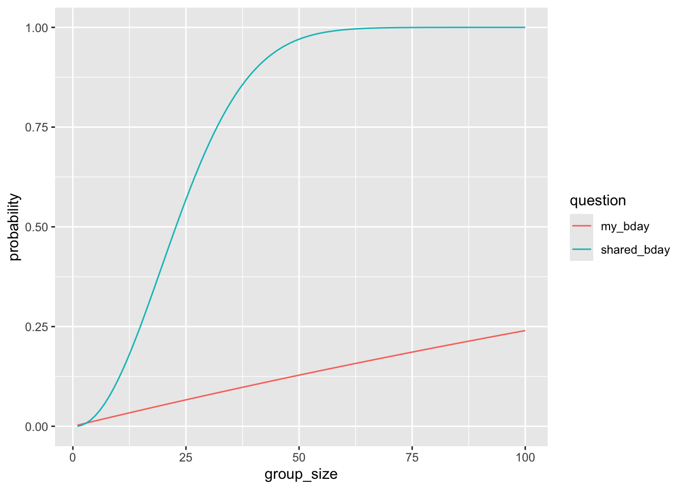
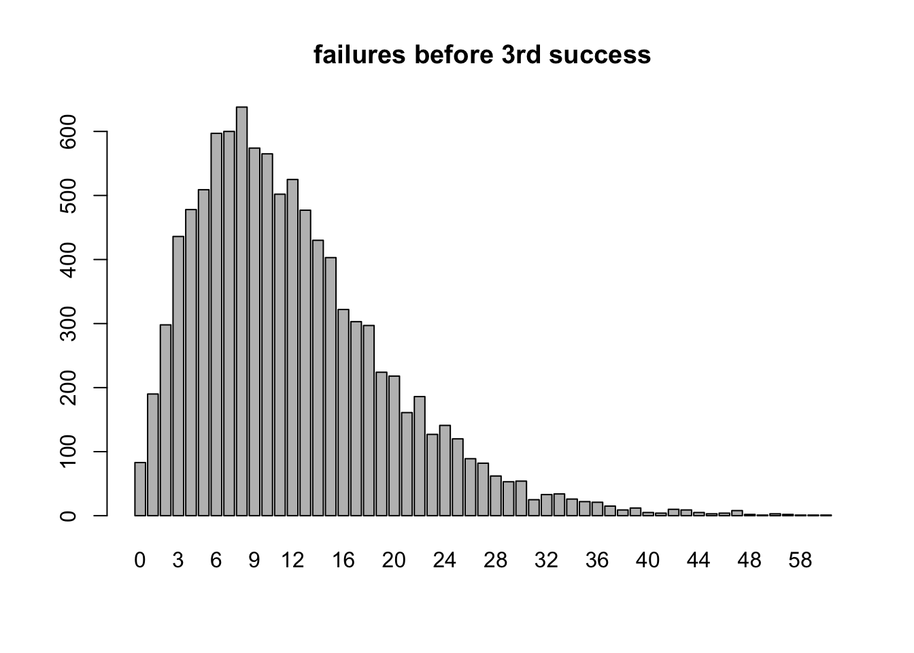
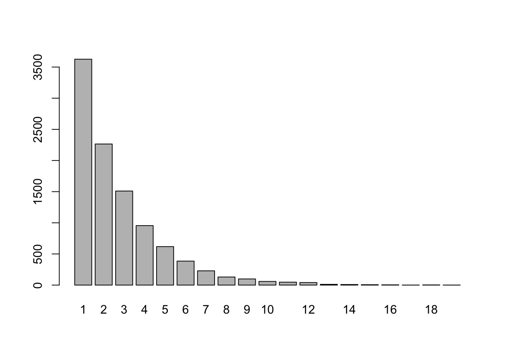

B Simulating Probability in R
We can use repeated sampling of a chance experiment to estimate the probability of some event. The examples here were chosen to provide an introduction to sampling scenarios that you may find useful in this class (rolling dice, flipping coins, drawing names from a hat, marbles from a box,…). These examples also assume no previous knowledge of R beyond what was covered in Appendix A, and have been ordered roughly by my view of the complexity of the coding involved.
B.1 Difference of two dice
If you roll 2 6-sided dice, what’s the likelihood that their values are 1 apart.
Our Strategy: roll the two dice, record the absolute value of their difference, repeat!
Code:
trials = 10000
die_1 = 1:6
die_2 = 1:6
results = c() #stores the difference of the two dice each trial
for (i in 1:trials){
roll_1 = sample(die_1,1)
roll_2 = sample(die_2,1)
difference = abs(roll_1-roll_2)
results[i] = difference
}Results:
## results
## 0 1 2 3 4 5
## 1618 2751 2276 1634 1172 549Conclusion: By computing the ratio sum(results==1)/trials, we obtain our estimate of the probability the two dice to be 1 apart:
0.2751.
Referring to the 6x6 grid recording the difference for each of the 36 possible outcomes in Table 3.4, we would find the actual probability equal to 10/36 \(\approx\) 0.278.
B.2 Oregon License Plates
Classic Oregon license plates consist of 3 letters (A-Z) followed by 3 numbers (0-9). Find the probability that a randomly selected plate has two 8s.
This is not such an interesting probability question - at least not one we need to simulate - but it’s fun to build a random Oregon license plate!
Strategy:
- Build a random plate. We want three random letters (repeats ok), followed by three random numbers (repeats ok). So, we sample from
LETTERS3 times with replacement, then 0:9 three times with replacement.
## [1] "V" "A" "G" "6" "5" "0"Fun!
- Count how many “8”s are in the plate
## [1] 0Final Code
trials = 10000
results = c()
for (i in 1:trials){
plate = c(sample(LETTERS,3,replace=TRUE),
sample(0:9,3,replace=TRUE)) #build a plate
eights = sum(plate=="8") # count the 8s
results = c(results,eights) # update the results vector
}
table(results)## results
## 0 1 2 3
## 7313 2430 250 7Based on this simulation, we estimate the probability of having a plate with exactly 2 “8”s
## [1] 0.025Using our counting tools to calculate the probability (and we really don’t need to keep track of the letters in the plate, but we do):
\[\frac{26\cdot 26\cdot 26 \cdot \binom{3}{2} \cdot 1 \cdot 1 \cdot 9}{26^3\cdot 10^3}= \frac{27}{1000} = 0.027.\]
B.3 Rolling a 10-sided die
We’re rolling a fair 10-sided die. Use simulation to estimate the probability that the first time we roll an 8 or higher is on the 5th roll.
Scratch Work
- Simulate rolling a 10-sided die 5 times. (Sample 5 times with replacement from the vector 1:10.)
- We want code to check whether a random sequence of 5 rolls has these five features: Rolls 1-4 are less than 8, and roll 5 is an 8, 9, or 10.
We can ask these five questions in R and store the answers in a logical vector:
## [1] TRUE FALSE FALSE FALSE FALSERecall, the sum() of a logical vector counts the number of TRUE values. We need the sum to be 5 to have the kind of sequence we want to count.
## [1] 1I think we’re ready!!
Final Code
trials = 10000
results = c() #stores how many dice "do the right thing" in each trial
die = 1:10
for (i in 1:trials){
rolls = sample(die,5,replace=TRUE) # roll the 10-sided die 5 times
x=sum(c(rolls[1:4]<8,rolls[5]>=8)) #how many dice "do the right thing"
results=c(results,x) # update the results vector
}The results of the simulation:
## results
## 0 1 2 3 4 5
## 53 559 1997 3644 2971 776Based on our simulation, we estimate the probability in question by the ratio: sum(results==5)/trials = 0.0776.
This estimated probability is likely very close to what we calculate by our counting tools: \[\frac{7^4\cdot 3}{10^5} \approx .07203.\]
Final note: In this example we added to the results vector each iteration by concatenation (results=c(results,x)) rather than by specifying results[i]=x in each trial, as we did in the difference of two dice example. Either approach works.
B.4 Marbles from an urn
An urn contains 100 orange and 200 green marbles. If you draw 8 marbles from the urn at random (without replacement), how likely is it that more than 5 of them are orange?
urn = rep(c("orange","green"),c(100,200))
trials = 10000
results = c()
for (i in 1:trials){
grab = sample(urn,8,replace=FALSE)
orange_count = sum(grab=="orange")
results[i] = orange_count
}
table(results)## results
## 0 1 2 3 4 5 6 7 8
## 388 1545 2775 2705 1699 686 180 21 1We can enter sum(results > 5) to see how often we grabbed more than 5 orange marbles in our sample of size 8, and sum(results > 5)/trials is a good estimate of the likelihood of this happening.
Conclusion: It appears we should expect the more than 5 orange marbles in our sample of 8 about 2% of the time:
## [1] 0.0202This question is a classic “good potatoes/bad potatoes” problem, and by our counting techniques, we know the probability is \[\frac{\binom{100}{6}\cdot\binom{200}{2}}{\binom{300}{8}}+ \frac{\binom{100}{7}\cdot\binom{200}{1}}{\binom{300}{8}}+ \frac{\binom{100}{8}\cdot\binom{200}{0}}{\binom{300}{8}},\] which we can evaluate in R as a check:
## [1] 0.01830405Note: After studying common named discrete probability distributions, we will see that R has a nice built-in command for doing these sorts of computations.
B.5 Tracking runs of Heads in coin flips
If you flip a coin 20 times, how likely is it to have a run of at least 5 Heads in a row?
One approach:
- Build a coin vector:
coin = c("H","T") - Build a vector for recording the outcomes of twenty flips:
flips = sample(coin,size=20,replace=TRUE) - Record the longest run of Heads in the sequence.
- Repeat many, many times.
The following code plays this ‘flip a coin 20 times and record the longest run of heads’ game for 10000 trials.
coin = c("H","T")
trials=10000
results=c() #stores longest run of Heads each trial
for (i in 1:trials){
flips = sample(coin,20,replace=TRUE) #generate the 20 flips
run = 0 #marker for current streak of Heads
max_run = 0 #stores the longest streak of Heads
for (k in 1:20){
if (flips[k] == "H"){
run = run + 1 #current run increases by 1 if flip k is "H"
max_run = max(max_run,run) #checks for new max run
}
if (flips[k] == "T"){
run = 0 #resets current run to 0 if flip k is "T"
}
results[i]=max_run
}
}Summary of results:
## results
## 1 2 3 4 5 6 7 8 9 10 11 12 13 14 15
## 163 1849 3184 2312 1305 636 276 151 51 44 14 10 3 1 1Are you kidding me? In 1 of the trials we saw 15 Heads in a row!?
Based on these trials, our estimate for the likelihood of seeing a run of at least 5 Heads in 20 flips is sum(results >=5)/trials = 0.249.
B.6 Splitting a set into multiple subsets
A class has 12 people: 6 juniors, 4 sophomores, and 2 first-years. The class is randomly divided into 3 subgroups of size 5, 4, and 3. What is the probability that the 2 first-years are in the same subgroup?
One approach:
Build the class:
class = rep(c("J","S","F"),c(6,4,2))Partition the members into three subgroups of size 5, 4, and 3. Our approach: shuffle the
classvector (find a random permutation), take the first five in this permutation for subgroup 1, the next 4 for subgroup 2, and the last 3 for subgroup 3.
shuffle = sample(class)
sub1 = shuffle[1:5]
sub2 = shuffle[6:9]
sub3 = shuffle[10:12]
# the code below displays the subgroups as a check
cat("Subgroup 1: ", sub1, "\n",
"Subgroup 2: ", sub2, "\n",
"Subgroup 3: ", sub3, sep = "")## Subgroup 1: SSJJJ
## Subgroup 2: JJFS
## Subgroup 3: SJF- Count the number of first-years in each subgroup, and record these numbers as a vector of length 3:
## [1] 0 1 1- The two first-years are in the same subgroup if and only if
countcontains a 2. The following code uses anifelse()command to record 1 if both first-years are in the same group, and 0 if not.
## [1] 0Final Code
We put it all together now. In particular, we repeat the following process for 10000 trials: Partition the class into the three subgroups, count the “F”s in each subgroup, record 1 if both “F”s find themselves in the same group, and 0 otherwise. We store these 1s and 0s in the vector results.
class = rep(c("J","S","F"),c(6,4,2))
trials = 10000
results = c()
for (i in 1:trials){
shuffle = sample(class) #randomly shuffles the 12 people.
sub1 = shuffle[1:5] # first 5 in the random shuffling go to subgroup 1
sub2 = shuffle[6:9] # next 4 to subgroup 2
sub3 = shuffle[10:12] # last 3 to subgroup 3
count = c(sum(sub1=="F"),sum(sub2=="F"),sum(sub3=="F"))
#are both "F"s in the same subgroup? We record 1 if "yes", and 0 if "no"
results[i] = ifelse(2 %in% count,1,0)
}
table(results)## results
## 0 1
## 7161 2839Based on this simulation, we estimate the probability that both first-years end up in the same subgroup as
## [1] 0.2839Using our counting tools to calculate the probability:
\[\frac{\binom{10}{3~4~3}+\binom{10}{5~2~3}+\binom{10}{5~4~1}}{\binom{12}{5~4~3}}\] which evaluates to 7980/27720 \(\approx 0.288\):
(factorial(10)/(6*24*6)+factorial(10)/(120*2*6)+factorial(10)/(120*24*1))/(factorial(12)/(120*24*6))## [1] 0.2878788B.7 Pollsters
(From Grinstead Snell Text 1.1 Exercise 12) In an upcoming election for mayor of a large city, a pollster plans to predict the winner of the popular vote by taking a random sample of 1000 voters and declaring that the winner will be the one obtaining the most votes in his sample. Suppose that 48 percent of the voters plan to vote for the Republican candidate and 52 percent plan to vote for the Democratic candidate. To get some idea of how reasonable the pollster’s plan is, write a program to make this prediction by simulation. Repeat the simulation 1000 times and see how many times the pollster’s prediction would come true.
First, let’s create and summarize a single poll of 1000 people from a population in which 52 percent are “D”, and 48 percent are “R”.
## one_poll
## D R
## 512 488Of course, the goal is to use the poll to predict the winner of the election.
We use the sum() command to count how many elements in one_poll equal “D” (use those double equal signs), and the ifelse() command to record the predicted winner.
## [1] "Dem wins"Now, our goal is to repeat this sampling and prediction procedure 10000 times, and keep track of the predicted winner in each trial.
dem = .52 #proportion voting "D"
rep = 1 - dem # proportion voting "R"
poll_size = 1000 # poll sample size
trials = 10000
results = c()
for (i in 1:trials){
poll = sample(c("D","R"),
size = poll_size,
replace = TRUE,
prob = c(dem,rep))
results=c(results,
ifelse(sum(poll == "D") > poll_size/2,"D","Tie or R"))
}
table(results)## results
## D Tie or R
## 8922 1078This table gives us a sense of the likelihood that the pollsters plan will result in an accurate prediction of which candidate will win the election. Based on our simulation, that likelihood is about 0.892.
B.8 Matching Birthdays
Suppose you ask \(n\) random people their birthday (month and day, disregarding year). What is the probability that at least one of them shares your birthday? What is the probability that at least two of them share the same birthday? (Assume 365 days in a year - ignore leap days.)
We do not use R to estimate these probabilities in this example. We find the probabilities exactly, and then use R to analyze them as \(n\) changes.
We tackle the first question by first computing the probability that none of the \(n\) people share my birthday. The probability that a random person does not have my birthday is \(\frac{364}{365},\) and the probability that \(n\) random people all do not have my birthday is \(\left(\frac{364}{365}\right)^n\).
The complement of this event is that at least one of the \(n\) people has my birthday, and so the probability of this will be \(1- \left(\frac{364}{365}\right)^n\).
We can write a function in R to compute this probability for various values of \(n\).
For instance, in a group of 15 people here’s the probability that someone shares my birthday:
## [1] 0.04031703Not too likely!
For the second question, we begin by calculating the probability that no one in a group of \(n\) people shares the same birthday as anyone else.
So, we need all \(n\) people to have a different birthday. This probability is found in essentially the same way that you answered #6 in Homework 2, and it equals \[\frac{P^n_r}{365^n}=\frac{365\cdot 364 \cdot \cdots \cdot (365-n+1)}{365^n}.\] So, the probability that at least two people share the same birthday, which is the complement of “no one shares the same birthday” is \[1 - \frac{365\cdot 364 \cdot \cdots \cdot (365-n+1)}{365^n}.\]
For instance, in a group of 6 people, the probability that at least two people share a birthday is \[1-1 \cdot \frac{364}{365}\cdot\frac{363}{365}\cdot \frac{362}{365}\cdot\frac{361}{365}\cdot\frac{360}{365}\approx0.04.\]
Here’s a function that will compute this probability for any group size \(n\).
For instance, in a group of 15 people here’s the probability that at least two people share a birthday
## [1] 0.2529013Whoa! A 25 percent chance! In fact, it turns out we only need 23 people gathered in a room to have a 50 percent chance that two of them share a birthday! Also, with a group of 59 people we have a 99 percent chance of a birthday match: prob_shared_bday(59)=0.993.
Here’s a graph of these two probabilities for values of \(1 \leq n \leq 100\).
sh=c()
my=c()
for (i in 1:100){
sh=c(sh,prob_shared_bday(i))
my=c(my,prob_my_bday(i))
}
df <- data.frame(group_size=1:100,my_bday=my,shared_bday=sh)
df_long <- df%>% pivot_longer(cols=c(my_bday,shared_bday), names_to = "question", values_to = "probability")
ggplot(df_long)+
geom_line(aes(x=group_size,y=probability,col=question))
B.9 Flipping Coins with Fibonacci
Let \(X\) equal the number of flips required to observe heads on consecutive flips. For instance, \(X = 6\) in the flip sequence “T H T T H H”. The random variable \(X\) is discrete, taking on countably infinite values 2, 3, 4, \(\ldots\) .
The probability function for \(X\) is \[p(x) = \frac{F_{x+1}}{2^x} \text{ for } x = 2, 3, 4, \ldots,\] where \(F_n\) is the \(n\)th Fibonacci number. (\(F_n\) is defined recursively: \(F_1 = F_2 = 1,\) and for \(n \geq 3,\) \(F_n = F_{n-1}+F_{n-2}\).)
Deriving this function requires some satisfying work, which we work through in class.
We can also approximate the probability function by simulation.
trials = 10000
results = c() #stores result
for (i in 1:trials){
flips = 0
consecutive_H = 0
while (consecutive_H<2){
flips = flips + 1 #recording flips made in this trial
consecutive_H = ifelse(sample(c("H","T"),1)=="H",consecutive_H+1,0)
}
results[i]=flips #updates results to include flips required for consec heads in this trial
}We note that the maximum number of flips it took to get consecutive Heads in these trials was max(results) = 46! (that’s not a factorial symbol, just me exclaiming). So we don’t list the full table of results here, just the first 10 relative frequencies, which provide estimates for the probability function:
## results
## 2 3 4 5 6 7 8 9 10 11
## 0.2464 0.1237 0.1274 0.0900 0.0800 0.0598 0.0539 0.0405 0.0350 0.0298These values compare closely to the actual probability values \(F_{x+1}/2^x\):
| x | 2 | 3 | 4 | 5 | 6 | 7 | 8 | 9 | 10 | 11 |
| Rel_freq | 0.2464 | 0.1237 | 0.1274 | 0.0900 | 0.0800 | 0.0598 | 0.0539 | 0.0405 | 0.0350 | 0.0298 |
| p(x) | 0.2500 | 0.1250 | 0.1250 | 0.0938 | 0.0781 | 0.0625 | 0.0508 | 0.0410 | 0.0332 | 0.0269 |
B.10 Seats on an airplane
A small airplane has 4 rows of 3 seats. 8 people board and sit randomly among the 12 seats. Then a couple boards. What is the probability they will be able to sit next to each other in the same row?
Strategy
It is convenient to use a matrix with 4 rows and 3 columns to represent the seats in the plane. Each entry in the matrix is 0 or 1 depending on whether the seat is empty or occupied.
We randomly assign 8 1s to the 12 entries in the matrix, leaving the remaining 4 spots 0, and then we check to see whether one of the rows has adjacent 0s.
First, here’s one way to randomly assign 8 1s and 4 0s to 12 seats (we make a vector with 8 1s and 4 0s, and then take a random permutation of it):
## [1] 1 0 0 1 1 1 0 1 1 0 1 1And here’s how we can store this vector of length 12 in a \(4\times 3\) matrix:
## [,1] [,2] [,3]
## [1,] 1 0 0
## [2,] 1 1 1
## [3,] 0 1 1
## [4,] 0 1 1As the display above suggests, we can extract a value from matrix m by indicating its [row,column]: m[3,2] returns the element in row 3, column 2.
Here’s one way to check for empty seats next to each other in a given row: See whether the middle entry is 0 AND the sum of the three numbers in the row is less than or equal to 1.
for (row in 1:4){
result=ifelse(m[row,2]==0 & sum(m[row,])<= 1,"seats together!","nope")
print(paste("Row",row,result))
}## [1] "Row 1 seats together!"
## [1] "Row 2 nope"
## [1] "Row 3 nope"
## [1] "Row 4 nope"Ok, we’ve got a plan! In the code below, we use s to record, in each trial, whether the couple can find seats together (s = 1) or they can’t (s = 0).
Final code
trials = 10000
results = c()
for (i in 1:trials){
m=matrix(sample(c(rep(1,8),rep(0,4))),byrow=TRUE,nrow=4)
s=0
for (r in 1:4){
if (m[r,2]==0&sum(m[r,])<=1){
s = 1
break
}
}
results[i]=s
}
sum(results)/trials## [1] 0.6034This probability seems higher than I first expected it would be, but we can also prove using our counting techniques -we do this in class - that the probability is, in fact, 20/33.
B.11 Drawing names for Homemades
Growing up, I enjoyed a family tradition of exchanging homemade gifts at Christmas. In part, my enjoyment stemmed from the fact that I was the youngest person, by 6 years, in our family of 6. While I would earnestly make and give to some unlucky brother or parent a clay boot I made in the kiln at school, I was likely to receive a far superior gift in return, perhaps a lightweight springboard from my Dad that was just sturdy enough to propel my little body, flipping, into a sea of beanbags in the basement, but not sturdy enough to withstand the weight of a big brother.
I also enjoyed the secrecy of the homemades: the locked doors behind which people worked, the occasional curious scrap of material left behind on a workbench, or a splash of paint in the utility room that wasn’t there earlier. Then there was the celebration of the exchange itself, the pride of giving your gift, the excitement of receiving one, and, after months of speculation, the big reveal as to who everyone drew.
We would usually draw names in late October. If anyone drew their own name, we would immediately stop the process, return all names to the hat, and try again. We kept redrawing, as necessary, until everyone drew a name that wasn’t theirs. Then we were off and running, guarding the secret of our givee’s identity at all costs.
In this example we pursue three questions related to the homemades:
- In our family of 6, what is the probability we will not have to redraw.
Our approach: Create a vector called family, and a permutation of family (called draw). For each \(i,\) Person \(i\) in family draws person \(i\) in draw. So, we have to redraw if the two vectors ever agree at the same location.
family = c("Dad","Mom","Tom","John","Dave","Mike")
draw = sample(family)
matches = sum(family==draw) # number of locations at which the two vectors agree
redraw = ifelse(matches==0,"No.","Yes.")
print(paste("Redraw?",redraw))## [1] "Redraw? No."Let’s check who each person drew to be sure (remember, our code is assuming the ith person in the family vector drew the ith person in the draw vector)
for (i in 1:6){
print(paste(family[i],"drew",draw[i]))
if (family[i]==draw[i]){
print("Dang it! Need to redraw. Names back in the hat.")
break}
}## [1] "Dad drew Tom"
## [1] "Mom drew Dave"
## [1] "Tom drew Mike"
## [1] "John drew Dad"
## [1] "Dave drew Mom"
## [1] "Mike drew John"We now estimate the probability of not needing to redraw as follows:
n=6 #size of family
family = 1:n #we use numbers, to protect the innocent
trials=10000
results = c() #record for each trial a 0 for redraw, 1 for no redraw
for (i in 1:trials){
draw = sample(family)
results[i] = ifelse(sum(family == draw)==0,1,0)
}
sum(results)/trials## [1] 0.3646About a 36.5 percent chance of not needing to redraw.
- What is the expected number of draws needed until we do not need to redraw?
Now in our simulation we want to redraw until we don’t have to, and record how many attempts it took.
n=6 #size of family
family = 1:n #we use numbers, to protect the innocent
trials=10000
results = c() #record for each trial how many attempts it took to get a good draw
for (i in 1:trials){
attempts = 0
draw_again = TRUE
while (draw_again){
attempts = attempts+1
draw = sample(family)
draw_again = ifelse(sum(family == draw)>0,TRUE,FALSE)
}
results[i] = attempts
}
barplot(table(results))
Cripes! In 1 of the trials we needed 20 draws until no one drew their own name! Anyway, our estimate for the expected number of draws needed to get the gift-making off the mark is:
## [1] 2.7225and if that number looks somewhat familiar, I encourage you to read the mathematical addendum at the end of this example.
- Over time the family grew as families do until we had 16 in the gift exchange. Does the probability of needing to redraw change substantially with the larger family size?
Let’s just repeat (b) with \(n = 16\).
n=16 #size of family
family = 1:n #we use numbers, to protect the innocent
trials=10000
results = c() #record for each trial how many attempts it took to get a good draw
for (i in 1:trials){
attempts = 0
draw_again = TRUE
while (draw_again){
attempts = attempts+1
draw = sample(family)
draw_again = ifelse(sum(family == draw)>0,TRUE,FALSE)
}
results[i] = attempts
}
barplot(table(results))
Based on the trials, we estimate the probability of not needing a redraw in the larger family to be
## [1] 0.3692and our estimate for the expected number of draws to be
## [1] 2.6849Not much movement in the estimates, it seems.
With a function and a for loop we can streamline the process for estimating both of these values for many different family sizes.
hat_draw_sim <- function(n,trials){
# inputs: n - family size; trials - number of trials in simulation
# output: a vector with two values based on a number of trials:
# - first value: estimated prob of redraw for family size n
# - second value: estimated expected number of draws for family size n
family = 1:n
results = c() #record for each trial how many attempts it took to get a good draw
for (i in 1:trials){
attempts = 0
draw_again = TRUE
while (draw_again){
attempts = attempts+1
draw = sample(family)
draw_again = ifelse(sum(family == draw)>0,TRUE,FALSE)
}
results[i] = attempts
}
return(c(sum(results==1)/trials,sum(results)/trials))
}# run simulation for various family sizes
family_size = c(2:10,seq(15,60,5))
prob_redraw = c()
expected_draws = c()
for (i in 1:length(family_size)){
v=hat_draw_sim(family_size[i],trials=10000)
prob_redraw[i] = v[1]
expected_draws[i] = v[2]
}
#table of results
kbl(data.frame(family_size,prob_redraw,expected_draws)) %>% kable_styling(full_width=FALSE)| family_size | prob_redraw | expected_draws |
|---|---|---|
| 2 | 0.5040 | 1.9736 |
| 3 | 0.3262 | 3.0087 |
| 4 | 0.3755 | 2.6629 |
| 5 | 0.3633 | 2.7330 |
| 6 | 0.3647 | 2.7297 |
| 7 | 0.3681 | 2.7180 |
| 8 | 0.3689 | 2.7142 |
| 9 | 0.3632 | 2.7300 |
| 10 | 0.3754 | 2.6944 |
| 15 | 0.3678 | 2.7184 |
| 20 | 0.3633 | 2.7116 |
| 25 | 0.3594 | 2.7363 |
| 30 | 0.3726 | 2.6940 |
| 35 | 0.3648 | 2.7404 |
| 40 | 0.3672 | 2.7364 |
| 45 | 0.3598 | 2.7527 |
| 50 | 0.3749 | 2.7053 |
| 55 | 0.3724 | 2.7381 |
| 60 | 0.3688 | 2.7570 |
It seems the probability of not needing a redraw and the expected number of draws needed both converge fairly quickly to about 0.37ish and 2.7 ish, respectively.
In fact, these values ought to be closely related of one another since “drawing until our first success” sounds like a geometric distribution to me. The probability of success on any given draw somewher in the neighborhood of \(p = .37,\) and the expected value for a geometric distribution is \(1/p,\) which would be about \(1/.37,\) which puts us in the neighborhood of \(2.7\). If these numbers seem frustratingly imprecise, I’m glad, and I invite you to read the following addendum.
Mathematical addendum to the question of drawing names.
The actual expected number of draws, as \(n \to \infty,\) is \(e,\) and the probability of not needing to redraw approaches \(1/e\) as \(n \to \infty\).
In part (a) of this question, we are counting derangements of a vector.
A derangement of a vector is a permutation of it in which no element is in its original position. An element of a permutation is called fixed points if it appears in its original position, so a derangement of a vector is a permutation of it with no fixed points. In part (a) we are estimating the probability that a permutation of the family vector is a derangement. There is a nice recursive formula for the number of derangements of a vector of size \(n,\) and it can be used to prove that the probability of drawing a derangement converges to \(1/e\) as \(n \to \infty\).
B.12 Idiot’s Delight
Idiot’s delight is a simple card game without strategy or game play options. Here are the rules:
At the start of the game your hand is empty, and the full deck is the draw pile. Your hand will always be an ordered list of cards.
Each turn consists of two steps.
- Draw one card from the draw pile. This card becomes the first, or “top” card in your hand.
- Check for hand reductions. If you have fewer than 4 cards in your hand you can make no reductions. If you have at least four cards, compare the top card with the fourth card in your hand (fourth from the top). If these cards have the same rank, remove the top four cards from your hand. If these cards have the same suit, remove the two cards in between (so, the 2nd and 3rd cards in your hand). Repeat step 2 until no reduction can be made. When no reduction can be made begin the next turn.
The game ends after you have drawn all cards from the deck and you can make no reductions. Your game score is the size of your hand at the end. For a regular 52 card deck you win if your score is less than 10.
We have two questions about this game.
- Estimate the probability that you win.
- Estimate how likely a player will have a reduction on each of the 52 draws that constitute a game.
Creating this game in R requires some work, beginning with the creation of a deck of cards, and continuing with the creation of some functions to manage the game play. Playing the game for a while might help the reader make sense of the code below.
#Build a Deck
rank = rep(c(2:10,"J","Q","K","A"),4)
suit = c(rep("clubs",13),rep("diamonds",13),rep("hearts",13),rep("spades",13))
deck = paste0(rank,"-",suit) #standard deck of cards
sample(deck,4) #display four random cards## [1] "10-clubs" "9-diamonds" "9-hearts" "2-clubs"Here’s code for playing the game with a lot of printed statements to increase the drama of each turn. We do not run the code here, but recommend you copy and paste it into a script in your own session and play a few times to get the feel for it.
#build a deck
rank = rep(c(2:10,"J","Q","K","A"),4)
suit = c(rep("clubs",13),rep("diamonds",13),rep("hearts",13),rep("spades",13))
deck = paste0(rank,"-",suit)
#game functions
rank <- function(card){ #extracts the rank from the card string
return(unlist(strsplit(card,"-"))[1])
}
suit <- function(card){ #extracts the suit from the card string
return(unlist(strsplit(card,"-"))[2])
}
scan <- function(hand){ #scans the hand for hand reductions
if (length(hand) <= 3){return(hand)}
if (rank(hand[1])==rank(hand[4])){return(hand[-(1:4)])}
if (suit(hand[1])==suit(hand[4])){
hand <- hand[-(2:3)]
hand <- scan(hand)
}
return(hand)
}
#play game with commentary
hand = c()
draw_pile = sample(deck)#shuffles the deck
for (k in 1:length(deck)){
print(paste("Turn",k,"hand after draw but before scanning:"))
hand <- c(draw_pile[k],hand) #add card to hand
print(hand)
hand <- scan(hand)
print('=================')
}
print(paste("Game score:",length(hand)))Here’s a play game function that plays the game (without commentary) and returns the size of your hand after each turn.
play_game <- function(){
#build a deck
rank = rep(c(2:10,"J","Q","K","A"),4)
suit = c(rep("clubs",13),rep("diamonds",13),rep("hearts",13),rep("spades",13))
deck = paste0(rank,"-",suit)
#game functions
rank <- function(card){ #extracts the rank from the card string
return(unlist(strsplit(card,"-"))[1])
}
suit <- function(card){ #extracts the suit from the card string
return(unlist(strsplit(card,"-"))[2])
}
scan <- function(hand){ #scans the hand for hand reductions
if (length(hand) <= 3){return(hand)}
if (rank(hand[1])==rank(hand[4])){return(hand[-(1:4)])}
if (suit(hand[1])==suit(hand[4])){
hand <- hand[-(2:3)]
hand <- scan(hand)
}
return(hand)
}
#play game without comment, returning vector of hand_sizes
hand = c()
draw_pile = sample(deck)#shuffles the deck
hand_size = c()
for (k in 1:length(deck)){
hand <- c(draw_pile[k],hand) #add card to hand
hand <- scan(hand) #look for reductions
hand_size[k]=length(hand) #record length of hand after turn k
}
return(hand_size)
}Now we do our simulations. The result of running the play_game() function is a vector of length 52, indicating the size of our hand after each of our 52 draws. With the trials below, we concatenate these vectors into one long vector results (of length 52*trials) which we then convert into matrix with 52 columns in such a way that each row of the matrix represents the hand sizes for a single game.
trials = 1000
results = c()
for (i in 1:trials){
v = play_game()
results = c(results,v)
}
M = matrix(results,byrow = TRUE,ncol = 52)The last column of this matrix records each of our final game scores, so the fraction of those values less than 10 answer part (a) for us.
Our estimated probability of winning in a game of Idiot’s delight:
## [1] 0.331For (b), the likelihood of having a reduction on turn \(k\) (for each \(k = 1,2,\ldots 52\)), we can compare our hand size after turn \(k\) with our hand size after turn \(k-1\).
We know turns \(k = 1, 2, 3\) can have no reductions, but starting with \(k = 4\) we might:
reduction = c(0,0,0) # start by recording 0 reductions for turns 1,2,3
for (k in 4:52){
reduction[k] = sum(M[,k]<M[,k-1])
}
plot(x=1:52,y=reduction/trials,type='l')
Starting with turn 4 it looks like the likelihood of having a reduction stays roughly constant, at about 0.28.